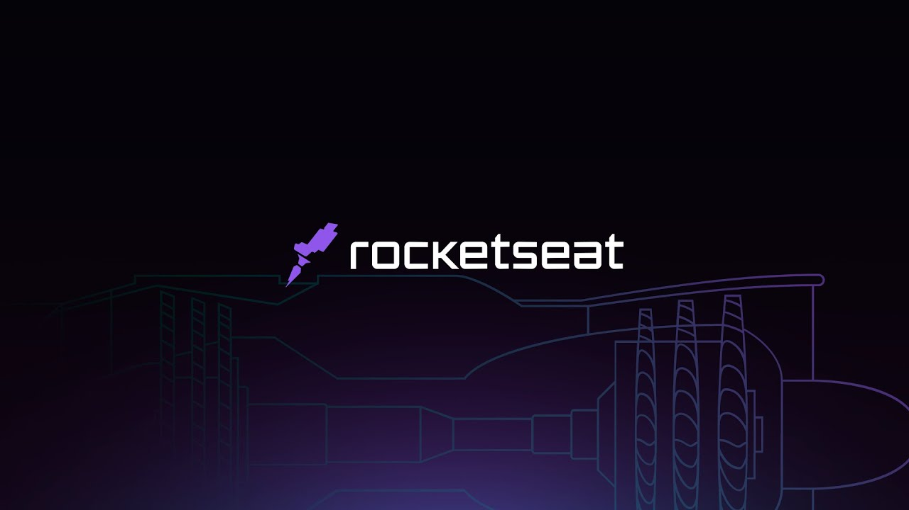

07 de junho 2013
Internet ditando regras
Depois de algumas desavensas profissionais(quem nunca), cheguei a mudar de ramo, escolhi imóveis, muito legal por sinal, mas o que estava no sangue era tecnologia. então, nessa data fui admitido por uma empresa de telefonia para expandir, até então, seu cargo chefe: internet pela linha telefônica. O que promoveu mais curiosidades - como criar essas páginas? Essas redes sociais? Aplicações que tornavam nossas vidas mais "fáceis".
19 de novembro de 2015
Sonhos e responsabilidades
Até estava feliz com minha profissão, porem com a chegada do meu menino, percebi que ia precisar de duas coisas que não tinha naquele momento: uma renda maior e tempo para família, afinal, telefonia consumia muito do tempo de qualquer um. Então com muito interesse, foi me apresentado por colegas as primeiras linguagens de programação, porém, demandava tempo e dinheiro, algo que não tinha.
01 de setembro de 2021
Inicio de um novo começo
Já sabiamos que a empresa não ia bem, ela demorou atualizar nosso setor, e infelizmente nesta data ele foi descontinuado, a fibra optica era uma realidade, porem a forte concorrencia e falta de investimento nos custou o emprego. Mas vamos ser positivos, agora tinha tempo... Um mes depois estava matriculado em uma faculdade cursando desenvolvimento de sistemas para internet.
E minha esposa me dando mais apoio do que nunca.
26 de outubro de 2022
Reservando meu acento no foguete

O curso da faculdade abriu muitas portas para meu conhecimento, mas me sentia um pouco perdido. Comecei a consumir conteúdo daquilo que mais me chamou atenção, o tal do frontend, matava uma curiosidade aqui, outra ali, uma aula de html e css do professor Guanabara, até que através do whatsapp, meu mecanico me apresentou a ROCKETSEAT(fui até procurar a conversa para ver a data), me contou a história de um amigo dele, que serviu para motivar nos dois. Nesse dia me inscrevi na plataforma, e nunca me senti tão bem direcionado, graças a didática incrível desse time.
19 de maio de 2023
NLW Spacetime Rocketseat
Estou na 4ª aula desse que é meu 3º NLW, e sempre tem uma novidade, algo novo a aprender, consegui fazer esse com muito mais facilidade que os anteriores, pretendo fazer o próximo pela trilha ignite, porem vou fazer assim que terminar as missões da plataforma, que são muito massa...
Pode ser que ninguem leia isso, mas esse foi um evento muito gratificante e emocionante, talvez não só para mim, porque esse tema me fez não só recordar como sentir as mais variadas passagens do meu caminho.
Obrigado Rocketseat!